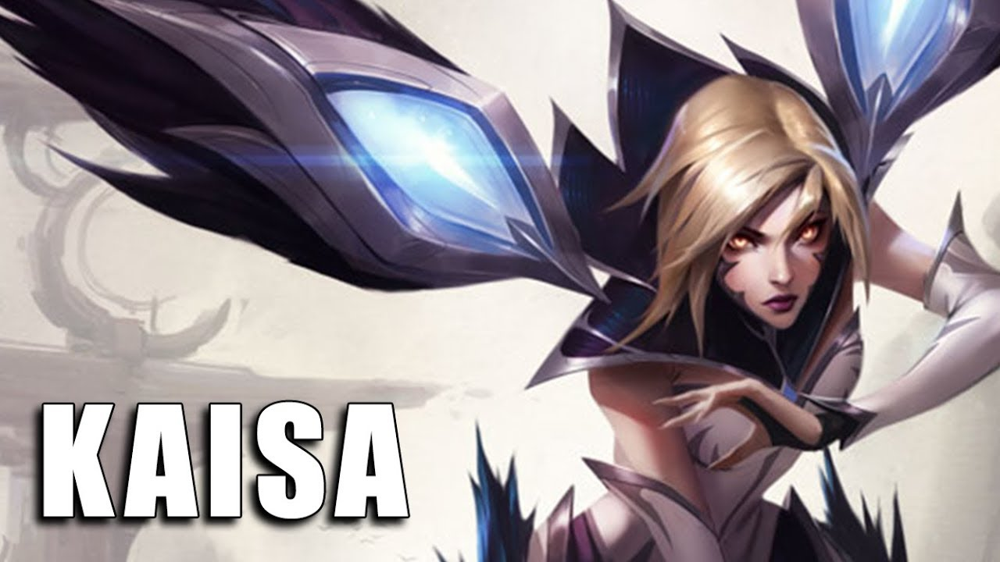
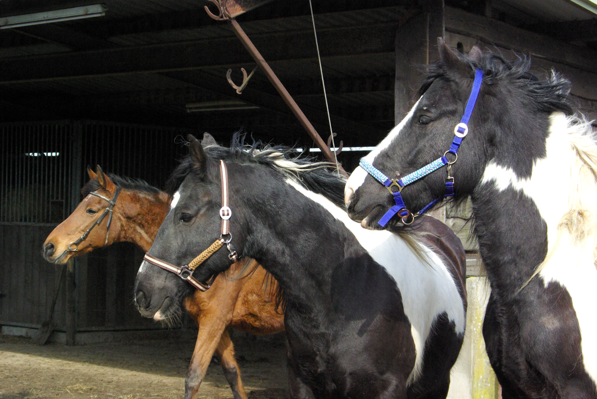
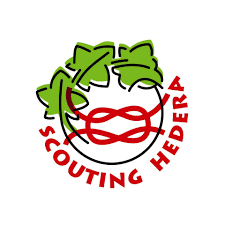

Mijn hobby's zijn
Games
Paardrijden
Ik begon met paardrijden door de camping in Lunteren, daar kon je een paar rondjes paardrijden voor een euro, ik ging daarna elke jaar daar heen in de meivakantie. Ik ga daar nu al ongeveer 8 jaar heen. Na ongeveer 4 jaar daar heen te gaan ben. ik naar manage gegaan dichtbij me huis.
Ik ging vroeger paardrijden op een manage, maar ik had door paardrijden me schouder gebroken en heb daar nog steeds soms last van. Ik ben van de manage weggegaan omdat ik daar niet meer zo veel leerde.
Scouting
Ik zit op scouting bij Scouting Hedera in Amstelveen.
Ik doe bij scouting verschillende activiteiten. Zoals elke jaar is er paroba daar gaan we in teams tegen anders teams van verschillende scouting's


